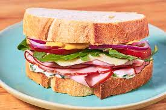

Ham Sandwich

Description
The best tasting ham sandwich you'll ever have.
Incredibly easy recipe to follow for the perfect sandwich for your packed lunch.
Ingredients
For the herb mayo
- 230g mayonnaise
- 2 tbsp. freshly chopped parsley
- 2 tsp. freshly chopped thyme
- 1 tbsp. extra-virgin olive oil
- 2 cloves garlic, crushed
For the sandwich
- 8 slices crusty bread, (such as sourdough or ciabatta)
- 115g herb mayo
- 75g Dijon mustard
- 12 slices deli ham
- 8 slices provolone
- Rocket
- 1 tomato, thinly sliced
- 1/2 red onion, thinly sliced
Steps
- In a medium bowl whisk together mayonnaise, parsley, thyme, oil, and garlic.
- Spread 2 tablespoons herb mayo on 4 slices of bread. Spread 1 tablespoon mustard on the other 4 slices of bread.
- Top each mayo slice of bread with 3 slices of ham, 2 slices of provolone, rocket, a couple slices of tomato, and red onion.
- Top with remaining bread slices, mustard side down.